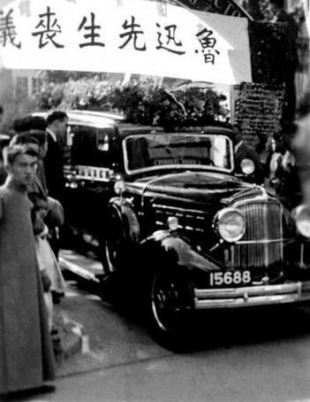

相关图片
-

- 


《呐喊》1923年8月，北京新潮社出版
《彷徨》1926年8月，北京北新书局
《故事新编》1936年，上海文化生活出版社
杂文集鲁迅生前所创作的未结集出版的杂文作品死后由蔡元培、许广平等整理出版纳入第一版鲁迅全集中，然而时间仓促，难免遗珠，1948年、1952年唐弢又整理出版了《鲁迅全集补遗》、《鲁迅全集补遗续编》，这些文章后以不同分类方式纳入各种版本的鲁迅全集之中，在这些全集中对这些文章总集所取名目颇多，以下皆以人民文学出版社2005年版《鲁迅全集》所取名为准。
 鲁迅杂文合集
鲁迅杂文合集
《坟》 1927年3月，未名社
《热风》 1925年11月，北京北新书局
《华盖集》 1926年8月，北京北新书局
《华盖集续编》 1927年5月，北京北新书局
《续编的续编》 1948年，上海出版公司
《而已集》 1928年10月，上海北新书局
《三闲集》 1932年9月，上海北新书局
《南腔北调集》 1934年4月，上海同文书店
《二心集》 1932年，上海合众书店
《花边文学》 1936年6月，上海联华书店
《伪自由书》 1933年10月，上海青光书局
《准风月谈》 1934年12月，上海联华书店
《且介亭杂文》 1937年7月，上海三闲书屋
《且介亭杂文二集》 1937年7月，上海三闲书屋
《且介亭杂文末编》 1937年7月，上海三闲书屋
《集外集》 1935年5月，上海群众图书公司
《集外集拾遗》 1938年，鲁迅全集出版社
《集外集拾遗补编》 1952年，上海出版公司
鲁迅翻译作品单行本《壁下译丛》 1929年4月，上海北新书局
《现代日本小说集》 1923年6月，上海商务印书馆
《现代新文学的诸问题》 1929年4月，上海大江书铺
《桃色的云》 1923年7月，北京新潮社
《艺术论》 1929年6月，上海大江书铺
《苦闷的象征》 1924年12月，北京未名社
《文学与批评》 1929年6月，上海水沫书店
《出了象牙之塔》 1925年12月，北京未名社
《月界旅行》 1903年，日本东京进化社
《小约翰》 1928年1月，北京未名社
《工人绥惠略夫》 1922年5月，上海商务印书馆
《思想·山水·人物》 1928年5月，北新书局
《现代小说丛译》 1922年7月，上海商务印书馆
《近代美术史潮论》 1929年，北新书局
《爱罗先珂童话集》 1922年7月，上海商务印书馆
《小彼得》 1929年11月，上海春潮书局
《文艺政策》 1930年6月，上海水沫书店
《艺术论》 1930年7月，上海光华书店
《毁灭》 1931年9月，上海大江书铺
《竖琴》 1933年1月，上海良友图书公司
《十月》 1933年2月，上海神州国光社
《一天的工作》 1933年3月，上海良友图书公司
《表》 1935年7月，上海文化生活书店
《俄罗斯的童话》 1935年8月，上海文化生活书店
《死魂灵》 1938年，上海文化生活出版社
《坏孩子和别的奇闻》 1936年6月，上海联华书局
《药用植物及其它》 1936年6月，上海商务印书馆
《山民牧唱》 1938年，鲁迅全集出版社
《译文补编》 2008年3月，福建教育出版社
《地底旅行》 1906年3月，上海普及书局及南京启新书局
《域外小说集》 1909年3月，上册；1909年7月，下册 署会稽周氏兄弟纂译，周树人发行，出版社未知
鲁迅学术专著《中国小说史略》 1923年12月，上册；1924年6月，下册，北大新潮出版社
《汉文学史纲要》 1938年，鲁迅全集出版社，鲁迅全集委员会整理
《中国小说的历史的变迁》 1938年，鲁迅全集出版社，鲁迅全集委员会整理
鲁迅其余作品合集《野草》 1927年7月，北京新潮社 散文诗合集
《朝花夕拾》 1928年9月，北平未名社 散文集
《古籍序跋集》 1938年，鲁迅全集出版社 鲁迅全集委员会整理合编
《译文序跋集》 1938年，鲁迅全集出版社 鲁迅全集委员会整理合编
《两地书》 1933年，上海青光书局 鲁迅与许广平书信合集
《鲁迅书简》 1937年，三闲书屋 许广平整理
《鲁迅日记》 1951年，上海出版公司 许广平整理